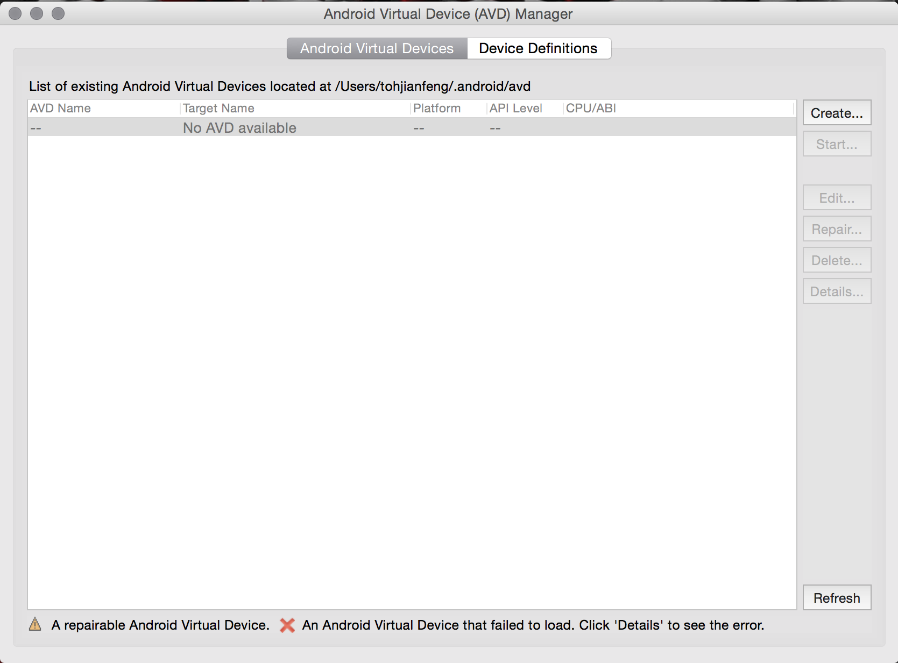

PhoneGap Tutorial
Setting Up Your Computer for PhoneGap Development
Created by Toh Jian Feng
Hi There
Here are some step-by-step instructions on how to prepare your computer for PhoneGap development.
Use the left and right arrow keys to navigate between steps,
and the up and down arrow keys to navigate between sub-steps.
Press the Esc button to get an overview of the whole presentation.
What You'll Need
Command Line Interface (CLI)

You'll learn to love it.

You'll need it to download PhoneGap, which is in a Node Package Manager (npm) library format.
You'll won't be needing it, but your CLI will.
A smartphone
for obvious reasons.
It's not compulsory, but good to have.
Installing PhoneGap using npm
In your Terminal/Command Prompt, enter the following:
npm install -g phonegapsudo npm install -g phonegapWait for the packages to be downloaded. It may take a while.

You should be able to execute PhoneGap commands after that!

Creating a PhoneGap Application
Navigate to a folder of your liking.
Type in the following:
phonegap create <app name> <domain-style identifier> <app display title>Testing a PhoneGap Application
(The Easy Way Out)Download the PhoneGap Developer app.

Navigate to the folder of your created app.
cd <something something folder location>Start the server.
phonegap serveTake note of the network address that appears on the command line.
Start the PhoneGap Developer App on your phone.
Enter the network address that you have noted down just now.
You should see this!

Live updating FTW.
Navigate to the folder labeled "www".
Open up index.html.
Try editing the the text within the h1 brackets and save the file.
Look at your phone.
Testing a PhoneGap Application
(The Hard Way)Step 3: Installing the Java Development Kit (JDK)
Download the Java JDK (Java Development Kit) from the Java Downloads site and follow the instructions on the installer.
Do take note of where the JDK is installed.
For Mac users, you can locate you SDK by typing
/usr/libexec/java_home -v 1.8For Windows users, you should have known your installation location during the installation process.
Step 3: Installing the Android Software Development Kit (SDK)
PhoneGap allows you to create cross-platform applications using HTML/CSS/JavaScript.
For simplicity's sake, this guide will use the Android development path so as to accomodate all computers of different operating systems.
Download the Stand-Alone SDK Tools from the Android Developer Website.
For Windows:
Run the .exe file and follow the instructions on-screen.
For Mac:
Move the downloaded folder to a location of your liking.
Note down the file path; we will need this for later.
Setting the ANDROID_HOME Environment Variable
the ANDROID_HOME Environment Variable needs to be configured in order to execute android commands in the Command Prompt/Terminal.
For Windows:
set ANDROID_HOME=<full installation path>set PATH=%PATH%;%ANDROID_HOME%\tools;%ANDROID_HOME%\platform-toolsFor Mac:
export ANDROID_HOME=<full installation path>export PATH=${PATH};$ANDROID_HOME/tools;$ANDROID_HOME/platform-tools;$ANDROID_HOME/build-toolsInstalling the SDK Packages
Open up the SDK Manager by typing
androidon a Mac.
For Windows users, navigate to the folder that you have installed the android SDK in and click on SDK Manager.exe
The user interface of the SDK Manager should appear on your screen.
Select the latest version of Android Build Tools (current ver. 22.0.1) and the entire folder of Android 5.1.1 (API 22).
Click on "Install packages..." to install the required components to your computer.
Wait for the packages to finish installing. This will take some time.
Setting Up an Android Device for App Testing
There are two ways to test your apps.
- Using an actual Android Phone
- Using an Android Device Simulator on your computer
Using an Android Phone
Enable developer settings on your phone by doing the following:
- Access the section "About Phone" under the settings menu of your phone.
- Scroll to the line labelled "Build Number".
- Tap it seven times to unlock developer options.
Using an Android Phone
Navigate to the section "Developer Options" in the settings menu of your phone.
Enable the option "USB Debugging".
Connect your Android phone to your computer.
Tap on "trust" if a prompt appears on your phone asking you if you want the phone to allow connections from your computer.
Your phone is now recognized as an Android device for app testing.
Setting Up an Android Emulator
Sometimes you or your team may not have an Android phone with you.
That's totally fine, since we still have other phone operating systems (iOS, Windows Phone 8.1, and so on...) that we can work with.
Let's just assume, in this case, your targeted operating system is confined to Android.
Let's open up the Android Virtual Device (AVD) Manager by doing the following:
Mac: type the following command in your Terminal:
android avdWindows: Navigate to the Android SDK folder and run AVD Manager.exe.
You should see something like this:
From the menu, select "Create..." to start creating a new Android Emulator.